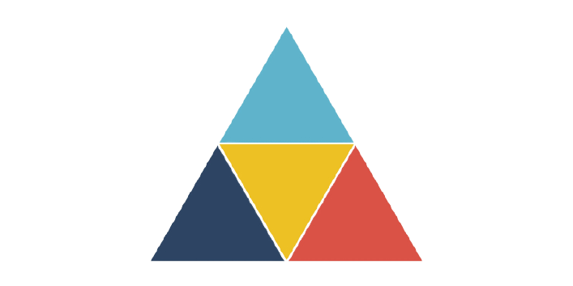

Questions

Triangle quiz
Go!
Rules:
Enter your name?
All questions are compulsory.
High score is 10
1.
If a triangle has angles 135
0
, 15
0
, 30
0
. Is it an obtuse triangle?
yes
no
2.
If a triangle has angles 115
0
, 25
0
, 40
0
. Is it an acute triangle?
yes
no
3.
If a triangle has angles 90
0
, 60
0
, 30
0
. Is it a right angle triangle?
yes
no
4.
A triangle has angles 60
0
, 60
0
, 60
0
. Is it an equilateral triangle?
yes
no
5.
If a triangle has angles 25
0
, 75
0
, 80
0
. Is it an acute triangle?
yes
no
6.
If a triangle has 2 sides with equal lengths and 75
0
angle between them. What is the type of triangle?
Equilateral
Isosceles
Right Angle traingle
7.
If a triangle has 2 angles of 75
0
. What is the measure of third angle in degree?
25
30
15
8.
If a triangle has 2 sides with equal lengths and 60
0
angle between them. What is the type of triangle?
Equilateral
Isosceles
Both
9.
The perimeter of an equilateral triangle is 15cm. What is the length of one side?
15cm
45cm
5cm
10.
If a triangle has sides of 2cm, 3cm, 4cm, what is the type of triangle?
Equilateral
Isosceles
Scalene
Submit
Pritam Kumar
Score:
?